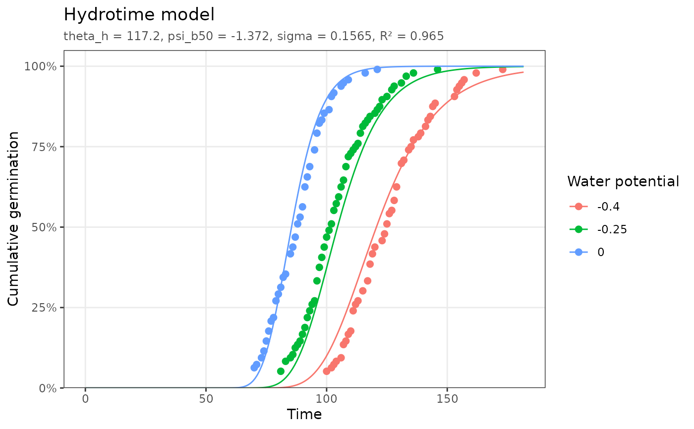

Fits the hydrotime model, in which the base water potential \(\psi_b(g) = \psi - \theta_H / t_g\) is normally distributed across the seed population:
Arguments
- data
A data frame with
GermWP,CumTime, andCumFractioncolumns (seefit_pbtm()).- ...
Further arguments passed on to
fit_pbtm(), such asmax_frac,fixed,bounds,subpops, orcols.
Value
A pbtm_fit object; see fit_pbtm().
Details
$$g = \Phi\left(\frac{\psi - \theta_H / t_g - \psi_b(50)}{\sigma}\right)$$
Use data collected at a single temperature.
Parameters
theta_h: hydrotime constant (MPa-time units).psi_b50: median base water potential (MPa).sigma: standard deviation ofpsi_bacross the population (MPa).
See also
Other model fitting functions:
fit_aging(),
fit_hydropriming(),
fit_hydrothermal_priming(),
fit_hydrothermal_time(),
fit_inhibitor(),
fit_promoter(),
fit_thermal_time()
Examples
fit <- fit_hydrotime(hydrotime_data)
fit
#> <pbtm_fit> Hydrotime model
#>
#> theta_h psi_b50 sigma
#> 117.2 -1.372 0.1565
#>
#> n = 125, pseudo-R2 = 0.9649, AIC = -706.8
autoplot(fit)
